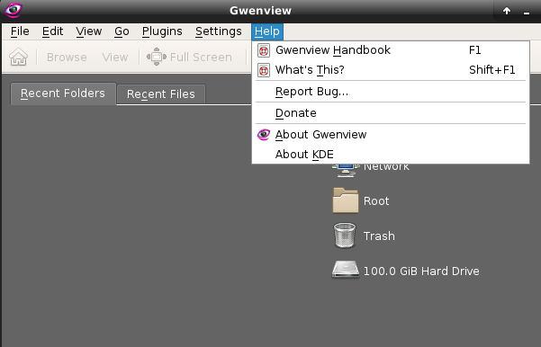
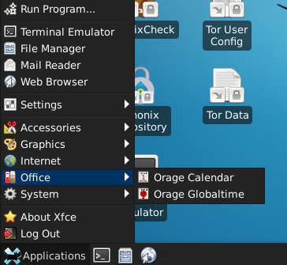
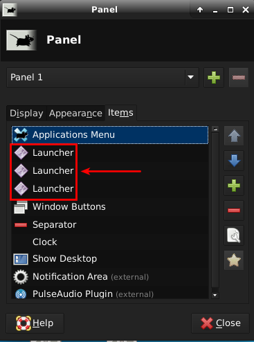

True. Config files are not copyrightable so you can choose to omit this or whatever you prefer.
Afaik using USB storage devices in VM’s is not really recommended. Volume Management is part of automounting USB devices though you still need to specifically enable it. Thunar-volman is the package used for automounting, it is installed in a default Xfce installation but not in Whonix. So atm disabling or enabling volume management should not really do anything but I’d still opt for keeping it disabled.
Regarding hidden files: I usually like to see what is going on, (evil) $things are obviously easier to hide when dot files/folder are hidden.
1 Like
Problem is if this is part of security-misc, it’s not a VM specific package.
Adding USB or not to VMs is up to the user. Qubes has a decent way to handle USB.
However, by turning Volume Management off by default, we worsen usability for Qubes?
- Case: user not adding USB to VM -> no security harm by Volume Management being enabled?
- Case: user adding USB to VM -> usability harm by Volume Management being disabled?
Does that make sense? So better leave it enabled?
I don’t think we’ll find any backdoor by showing hidden files by default. The usability impact is too big here to change the default. Unless we can argue that hidden files by default is actually bad for usability.
1 Like
Currently enabling or disabling does nothing since Thunar-Volman is not installed and you would also need to enable auomounting manually. It’s more like a 49 vs 51% decision.
Depends on the kind of backdoor or malware and people actually looking for such files. There are certainly better and more complex ways to hide files. The usability impact probably depends on personal preferences.
1 Like
Algernon:
Currently enabling or disabling does nothing since Thunar-Volman is not installed and you would also need to enable auomounting manually. It’s more like a 49 vs 51% decision.
So let’s not change it.
I’d even consider installing Thunar-Volman by default.
Depends on the kind of backdoor or malware and people actually looking for such files. There are certainly better and more complex ways to hide files. The usability impact probably depends on personal preferences.
Let’s keep them hidden by default. Usability will be worsened for most
users who get confused by much, much simpler things already.
1 Like
Really awesome exiting stuff going on here. 
Merged.
Is now merged in https://github.com/Whonix/Whonix/tree/master/packages.
All build and uploaded to developers repository. Untested.
Whonix/Whonix untested tag: 14.0.0.9.2-developers-only
Let’s hope https://phabricator.whonix.org/T721#17489 did not break Non-Qubes-Whonix builds.
1 Like
Actually did. Fixed in 14.0.0.9.3-developers-only.
Whonix-Gateway, Whonix-Workstation CLI, KDE and XFCE VirtualBox ova’s build and uploaded. Fully untested.
@Algernon make sure you dont install stuff which is unnecessary like battery,sensors …etc i have installed xfce and i saw that there some plugins/apps which are not needed to a virtual distro. (i can list them for you if you like)
Testing results:
- console-setup.service failed
sudo systemctl --failed list-units
user@host:~$ sudo systemctl --failed list-units
[sudo] password for user:
UNIT LOAD ACTIVE SUB DESCRIPTION
● console-setup.service loaded failed failed Set console font and keymap
LOAD = Reflects whether the unit definition was properly loaded.
ACTIVE = The high-level unit activation state, i.e. generalization of SUB.
SUB = The low-level unit activation state, values depend on unit type.
1 loaded units listed. Pass --all to see loaded but inactive units, too.
To show all installed unit files use 'systemctl list-unit-files'.
sudo journalctl -u console-setup.service
user@host:~$ sudo journalctl -u console-setup.service
-- Logs begin at Sat 2018-11-10 16:30:05 UTC, end at Sat 2018-11-10 16:51:03 U
Nov 10 16:32:54 host systemd[1]: Starting Set console font and keymap...
Nov 10 16:32:55 host console-setup.sh[404]: /bin/setupcon: 866: /bin/setupcon:
Nov 10 16:32:55 host systemd[1]: console-setup.service: Main process exited, c
Nov 10 16:32:55 host systemd[1]: Failed to start Set console font and keymap.
Nov 10 16:32:55 host systemd[1]: console-setup.service: Unit entered failed st
Nov 10 16:32:55 host systemd[1]: console-setup.service: Failed with result 'ex
- Virtualbox guest additions doesnt seem has any effect:
sudo journalctl -u virtualbox-guest-utils| cat
user@host:~$ sudo journalctl -u virtualbox-guest-utils| cat
-- Logs begin at Sat 2018-11-10 16:30:05 UTC, end at Sat 2018-11-10 16:53:53 UTC. --
Nov 10 16:32:59 host systemd[1]: Starting Virtualbox guest utils...
Nov 10 16:30:08 host virtualbox-guest-utils.anondist[713]: Starting VirtualBox AdditionsVBoxService 5.2.18_Debian r123745 (verbosity: 0) linux.amd64 (Sep 20 2018 06:51:32) release log
Nov 10 16:30:08 host virtualbox-guest-utils.anondist[713]: 00:00:00.000177 main Log opened 2018-11-10T16:30:08.678284000Z
Nov 10 16:30:08 host virtualbox-guest-utils.anondist[713]: 00:00:00.002205 main OS Product: Linux
Nov 10 16:30:08 host virtualbox-guest-utils.anondist[713]: 00:00:00.003040 main OS Release: 4.9.0-8-amd64
Nov 10 16:30:08 host virtualbox-guest-utils.anondist[713]: 00:00:00.003753 main OS Version: #1 SMP Debian 4.9.110-3+deb9u6 (2018-10-08)
Nov 10 16:30:08 host virtualbox-guest-utils.anondist[713]: 00:00:00.004464 main Executable: /usr/sbin/VBoxService
Nov 10 16:30:08 host virtualbox-guest-utils.anondist[713]: 00:00:00.004467 main Process ID: 945
Nov 10 16:30:08 host virtualbox-guest-utils.anondist[713]: 00:00:00.004467 main Package type: LINUX_64BITS_GENERIC (OSE)
Nov 10 16:30:08 host virtualbox-guest-utils.anondist[713]: 00:00:00.027985 main 5.2.18_Debian r123745 started. Verbose level = 0
Nov 10 16:30:08 host systemd[1]: Started Virtualbox guest utils.
Nov 10 16:30:08 host virtualbox-guest-utils.anondist[713]: .
Nov 10 16:53:20 host systemd[1]: Stopping Virtualbox guest utils...
Nov 10 16:53:20 host virtualbox-guest-utils.anondist[15423]: Stopping VirtualBox Additions.
Nov 10 16:53:20 host systemd[1]: Stopped Virtualbox guest utils.
Nov 10 16:53:20 host systemd[1]: Starting Virtualbox guest utils...
Nov 10 16:53:20 host virtualbox-guest-utils.anondist[15428]: Starting VirtualBox Additions.
Nov 10 16:53:20 host systemd[1]: Started Virtualbox guest utils.
dpkg -l | grep virtualbox
user@host:~$ dpkg -l | grep virtualbox
ii virtualbox-guest-dkms 5.2.18-dfsg-2~bpo9+1 all x86 virtualization solution - guest addition module source for dkms
ii virtualbox-guest-utils 5.2.18-dfsg-2~bpo9+1 amd64 x86 virtualization solution - non-X11 guest utilities
ii virtualbox-guest-x11 5.2.18-dfsg-2~bpo9+1 amd64 x86 virtualization solution - X11 guest utilities
user@host:~$
- launching any program on the desktop will these error messages:

- Let us Stop using kde applications + DE dependent applications e.g:

1- Okular alternative is xpdf reader
2- Gwenview alternative is either ristretto (already installed with xfce by default) or nomacs
3- Kgpg alternative GnuPG alone (enough i think?)
4- Mousepad is xfce package , Leafpad is independent
5- Kcalc just delete it or if its really necessary use calcoo
- Missed applications:
Thunderbird in WS
- not really useful/usable to have: orage calnder+global time

- Disable “save session for future logins” to avoid falling (might be) into this issue:
A list of those additional packages like batteries, sensors … would be nice.
Some applications like orage calender and global time will always be in a default installation of Xfce even with no-install-recommends and just using the Xfce core package. I guess there is not much that can be done about this.
I rebuild the Xfce images with the latest source so in theory the official and my images should be the same. I could not reproduce the failed services. I maybe need to take a closer look at the virtualbox guest utils? What exactly is not working?
The KDE packages like Okular, Kcalc etc. are only in the Workstation and will be removed. Currently, they are pulled in by a meta package but this can be changed. I don’t know if there is a decent GUI substitute for Kpgp so I’d like to keep it in there. Mousepad is indeed an Xfce package hence it is installed as default editor. We also use the default editor on KDE …
Thunderbird will be added in the next revision. “Save sessions” was once disabled, I guess it got lost somewhere. Though I don’t know if it will behave as errornous as in case of KDE.
I could also not reproduce the error when launching the .desktop files. The first is actually a warning and default behavior. You will see a similar one in KDE if you start the .desktop files. But since they are not on the desktop noone probably ever uses those. On KDE the warning is a bit less harsh tbh but I don’t know if the warning on Xfce can be changed.
not really , as those officially useless in the a VM distro. you cant have the right control of battery or CPU or …from a distro running inside a VM. This is discussed somewhere + sensors in general r dangerous for anonymity.
hmm remove them?
The weird sounds, everything is working for vbox , but not really on reality.
Awesome!
Kgpg has huge dependencies with KDE (ofcourse its built for it), better to be removed:
user@user:~$ sudo apt install kgpg
Reading package lists... Done
Building dependency tree
Reading state information... Done
The following additional packages will be installed:
docbook-xml docbook-xsl fonts-dejavu fonts-dejavu-extra icoutils kate-data
katepart kde-runtime kde-runtime-data kdelibs-bin kdelibs5-data
kdelibs5-plugins kdoctools libakonadi-contact4 libakonadi-kde4
libakonadiprotocolinternals1 libattica0.4 libaudio2 libcanberra-pulse
libclucene-core1v5 libdbusmenu-qt2 libdlrestrictions1 libdmtx0a libexiv2-14
libfam0 libgif7 libgpgme++2v5 libical2 libiodbc2 libkabc4 libkactivities6
libkatepartinterfaces4 libkcalcore4 libkcmutils4 libkde3support4
libkdeclarative5 libkdecore5 libkdesu5 libkdeui5 libkdewebkit5 libkdnssd4
libkemoticons4 libkfile4 libkhtml5 libkio5 libkjsapi4 libkjsembed4 libkldap4
libkmediaplayer4 libkmime4 libknewstuff3-4 libknotifyconfig4 libkntlm4
libkparts4 libkpimutils4 libkpty4 libkresources4 libkrosscore4
libktexteditor4 libkxmlrpcclient4 libmariadbclient18 libmhash2 libmng1
libnepomuk4 libnepomukquery4a libnepomukutils4 libnl-route-3-200
libntrack-qt4-1 libntrack0 libphonon4 libplasma3 libpolkit-qt-1-1 libprison0
libpulse-mainloop-glib0 libqca2 libqca2-plugins libqjson0 libqrencode3
libqt4-dbus libqt4-declarative libqt4-designer libqt4-network libqt4-opengl
libqt4-qt3support libqt4-script libqt4-sql libqt4-sql-mysql libqt4-svg
libqt4-xml libqt4-xmlpatterns libqtcore4 libqtdbus4 libqtgui4 libqtwebkit4
libraptor2-0 librasqal3 librdf0 libsolid4 libsoprano4 libssh-gcrypt-4
libthreadweaver4 libupower-glib3 libxml2-utils mysql-common
ntrack-module-libnl-0 oxygen-icon-theme phonon phonon-backend-gstreamer
phonon-backend-gstreamer-common plasma-scriptengine-javascript qdbus
qt-at-spi qtchooser qtcore4-l10n sgml-data soprano-daemon
sound-theme-freedesktop upower
Suggested packages:
docbook docbook-dsssl docbook-defguide dbtoepub docbook-xsl-doc-html
| docbook-xsl-doc-pdf | docbook-xsl-doc-text | docbook-xsl-doc
docbook-xsl-saxon fop libsaxon-java libxalan2-java libxslthl-java xalan
libterm-readline-gnu-perl | libterm-readline-perl-perl djvulibre-bin finger
nas exiv2 fam iodbc hspell libqt4-declarative-folderlistmodel
libqt4-declarative-gestures libqt4-declarative-particles
libqt4-declarative-shaders qt4-qmlviewer libqt4-dev qt4-qtconfig
raptor2-utils rasqal-utils librdf-storage-postgresql librdf-storage-mysql
librdf-storage-sqlite librdf-storage-virtuoso redland-utils
media-player-info phonon-backend-vlc gstreamer1.0-plugins-ugly
phonon4qt5-backend-gstreamer perlsgml w3-recs opensp virtuoso-minimal
The following NEW packages will be installed:
docbook-xml docbook-xsl fonts-dejavu fonts-dejavu-extra icoutils kate-data
katepart kde-runtime kde-runtime-data kdelibs-bin kdelibs5-data
kdelibs5-plugins kdoctools kgpg libakonadi-contact4 libakonadi-kde4
libakonadiprotocolinternals1 libattica0.4 libaudio2 libcanberra-pulse
libclucene-core1v5 libdbusmenu-qt2 libdlrestrictions1 libdmtx0a libexiv2-14
libfam0 libgif7 libgpgme++2v5 libical2 libiodbc2 libkabc4 libkactivities6
libkatepartinterfaces4 libkcalcore4 libkcmutils4 libkde3support4
libkdeclarative5 libkdecore5 libkdesu5 libkdeui5 libkdewebkit5 libkdnssd4
libkemoticons4 libkfile4 libkhtml5 libkio5 libkjsapi4 libkjsembed4 libkldap4
libkmediaplayer4 libkmime4 libknewstuff3-4 libknotifyconfig4 libkntlm4
libkparts4 libkpimutils4 libkpty4 libkresources4 libkrosscore4
libktexteditor4 libkxmlrpcclient4 libmariadbclient18 libmhash2 libmng1
libnepomuk4 libnepomukquery4a libnepomukutils4 libnl-route-3-200
libntrack-qt4-1 libntrack0 libphonon4 libplasma3 libpolkit-qt-1-1 libprison0
libpulse-mainloop-glib0 libqca2 libqca2-plugins libqjson0 libqrencode3
libqt4-dbus libqt4-declarative libqt4-designer libqt4-network libqt4-opengl
libqt4-qt3support libqt4-script libqt4-sql libqt4-sql-mysql libqt4-svg
libqt4-xml libqt4-xmlpatterns libqtcore4 libqtdbus4 libqtgui4 libqtwebkit4
libraptor2-0 librasqal3 librdf0 libsolid4 libsoprano4 libssh-gcrypt-4
libthreadweaver4 libupower-glib3 libxml2-utils mysql-common
ntrack-module-libnl-0 oxygen-icon-theme phonon phonon-backend-gstreamer
phonon-backend-gstreamer-common plasma-scriptengine-javascript qdbus
qt-at-spi qtchooser qtcore4-l10n sgml-data soprano-daemon
sound-theme-freedesktop upower
0 upgraded, 119 newly installed, 0 to remove and 0 not upgraded.
Need to get 95.7 MB of archives.
After this operation, 277 MB of additional disk space will be used.
Do you want to continue? [Y/n] n
Abort.
Thats the huge issue with KDE , everything depending on each other leading to remove one thing will remove everything. Thats why DE dependent packages better to be avoided to be installed by default.
great Thunderbird+Torbirdy+enigmail. True but better to disable it by default and leave it to the user needs , if he like to open it then he can do that (avoid ON by default very much better).
Just download whonix-xfce 14.0.0.9.3 for vbox to reproduce that. Solving the issue i dunno really …
More issues:
- Remove PulseAudio from GW:
This was a horrible extra package in GW-KDE, hope we dont repeat the same mistakes in xfce.
- Random launchers icon: (better to be fixed or removed)

he’s saying a list of unnecessary components would be nice so he wouldn’t have to waste time digging for them.
Running scripts to remove default packages seems like a messy hack and may have problems with removing core dependencies.
lol got it the opposite.
sorry @Algernon hehe
good thing i have listed above what needs to be changed/used/removed.
if i will find anything more i will report back.
Question: Accessibility feature/options do we need it for whonix?
TNT BOM BOM:
Question: Accessibility feature/options do we need it for whonix?
Big, difficult subject. Please discuss in separate forum thread.
1 Like
TNT BOM BOM:
This is discussed somewhere + sensors in general r dangerous for anonymity.
Sensors are unwanted in Whonix VMs. However if there are sensor widgets
showing sensor information then this is only a usability bug. And a
problem for screenshots perhaps. This sensor widgets make only visible
what’s available anyhow. Let’s hope we can get rid of them by package
selection of pre-configuration.
hmm remove them?
Algernon explained a technical limitation which is too difficult to fix
for the Whonix project. If we could avoid them, we would. Removal may
require forking XFCE, code changes to XFCE, and recompilation. Too much
work. Let’s hope we can get rid of them by pre-configuration.
Should be.
Build config / commands could be different?
export WHONIX_APT_REPOSITORY_OPTS='--enable --repository stable'
export REPO_PROXY="http://127.0.0.1:3142"
target_opts="--target virtualbox"
sudo -E ./whonix_build --flavor "$vm" $target_opts --unsafe-io true
$opts --build "$@"
[quote=“Algernon, post:37, topic:6213”]
I could not reproduce the failed services. I maybe need to take a closer
look at the virtualbox guest utils? What exactly is not working?
[/quote]The weird sounds, everything is working for vbox , but not really on reality.
Could you please describe in how far guest additions are not working?
Like, mouse/input is trapped in VM and requires host key to exit VM?
@TNT_BOM_BOM
Awesome!

Kgpg has huge dependencies with KDE (ofcourse its built for it), better to be removed:
@TNT_BOM_BOM
After this operation, 277 MB of additional disk space will be used.
277 MB savings in disk space and no more KDE default dependencies sounds
good. Let’s consider not installing kgpg by default. How important is
kgpg? How popularity used is it used by our users?
What hurts Whonix more, kgpg installed by default or having users to
manually install kgpg?
Thats the huge issue with KDE , everything depending on each other leading to remove one thing will remove everything. Thats why DE dependent packages better to be avoided to be installed by default.
Not a universal truth.
More issues:
>
- Remove PulseAudio from GW:
This was a horrible extra package in GW-KDE, hope we dont repeat the same mistakes in xfce.
Quite likely not a KDE vs XFCE issue. Ticket:
consider installing phonon4qt5-backend-null by default on Whonix-Gateway
https://phabricator.whonix.org/T786
1 Like
Cool , but i think removing it as well will damage xfce core? (since i assume it has been installed by default)
like this:

Work around:
after playing with xfce (because i liked it) , i found the solution.
- once you open whonix-xfce , then maximize the window of Vbox while just whonix running at the beginning (before fully loading) then you will see this result:

{kind=link}
i would go with kgpg installed by default , because user if he want it there is no simpler way to more than apt install kgpg. but installed by default would harm the users who dont use it or need it or like it by default (and being there with xfce making more nonsense).
i meant we faced that already in KDE , and again its happening in xfce. i think phonon ticket more for KDE ?
TNT BOM BOM:
i meant we faced that already in KDE , and again its happening in xfce. i think phonon ticket more for KDE ?
It’s more likely not KDE vs XFCE related.